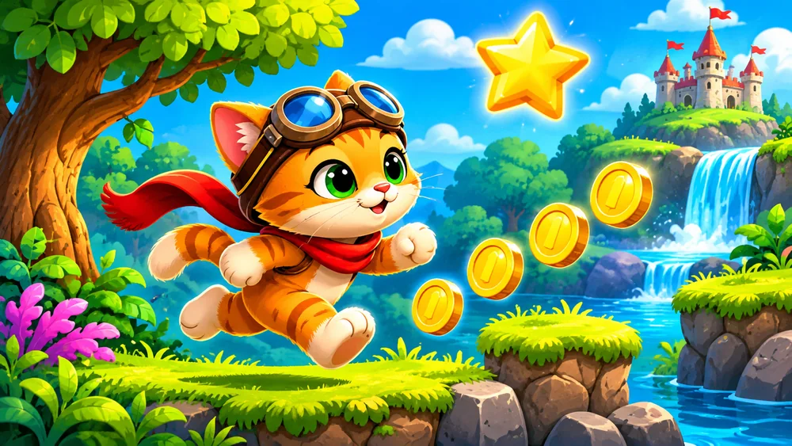

1. Кіт у русі
Змінюйте зображення кота під час руху.
Готові PNG: ⬇ idle.png · ⬇ left.png · ⬇ right.png ·


⌨️ Відкрити заготовку коду
import pgzrun
WIDTH = 600
HEIGHT = 400
hero = Actor("cat_idle", (300, 200))
def update():
if keyboard.left:
hero.image = "cat_left"
elif keyboard.right:
hero.image = "cat_right"
else:
hero.image = "cat_idle"
# TODO: додайте зміну координат
def draw():
screen.fill("lightblue")
hero.draw()
pgzrun.go()Що дописати
- Додайте стани ліворуч, праворуч і спокій.
- Змініть щонайменше два параметри та перевірте результат запуском.